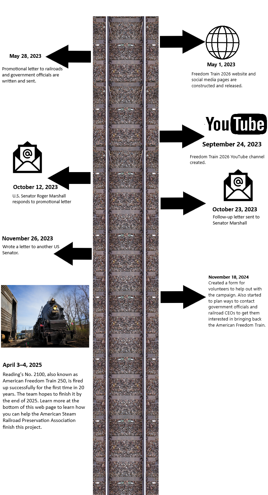

Freedom Train 2026
A project that will ignite the flame of patriotism in the hearts of Americans.
Image by 4449.com.
A project that will ignite the flame of patriotism in the hearts of Americans.
Image by 4449.com.


Image by oswegocountytoday.com.
This website was developed to inspire government organizations and railroads to help promote patriotism by getting the Freedom Train ready before 2026, the 250th anniversary of the United States becoming a nation. This event can be a means of reuniting Americans and reigniting the flame of patriotism in the hearts of many.
In 1947, after World War II, a private group called the "American Heritage Foundation" worked with the railroads and institutions of the nation to put together a special train that would visit each of the 48 states of America. Known as the Freedom Train, it carried many different exhibits inside of it, including a copy of the Bill of Rights, a copy of the Emancipation Proclamation, and a copy of the Mayflower Compact.
Throughout the course of a few years, the train traveled to each of the 48 states, igniting the flame of patriotism in the hearts of many Americans. Even after the national tour ended in 1949 and the exhibits were returned to their institutions, people still had the fond memories of how it felt to have one love for the one country that they lived in. The event even inspired the publication of a book entitled Freedom Train, a story about how a black family had a positive experience relating to the train.

↑ Image by thriftbooks.com.
← Image by www.freedomtrain.org.
In 1975, for the United States Bicentennial celebrations, another train was put together with similar exhibits as before, this time underneath the name of the American Freedom Train. The train carried the exact same exhibits, including a few new ones such as a replica of the Liberty Bell and one of the early lunar rovers. The train ran until 1976, and it again left a positive impact on the citizens, reuniting them in one love for the country in which they lived.
Image by 4449.com.

With the 250th anniversary of the United States of America around the corner, it is our mission to get the American Freedom Train up and running before 2026. We want to give Americans the same patriotic fire their grandparents felt when the first two Freedom Trains ran. However, there is much to be done in the next two years to reach our goal. A few of the tasks that we need to complete include choosing a locomotive for the event, working with different organizations to figure out what will be displayed in the train, and working with the different railroads to map out the route that the train will go through in order to visit all 48 states.
Here is a timeline showing how far the planning track we have gone:
We have begun to get a bit more progress in! If you want to read a copy of the promotional letter, you can read it here.